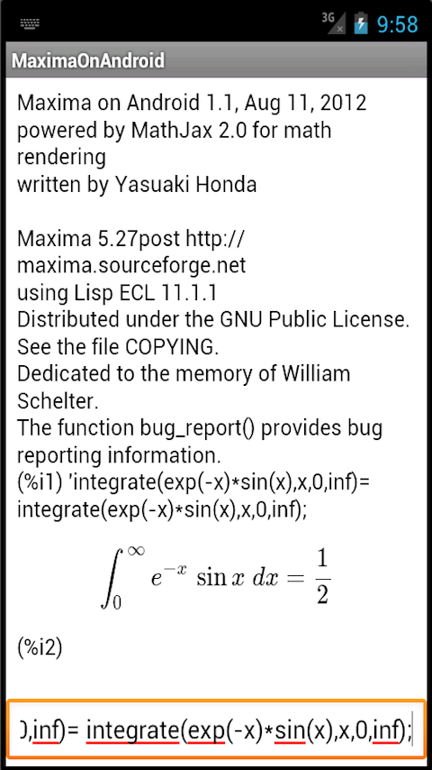

Maxima on Android 2.8
Copyright 2012, 2013, 2014, 2015 Yasuaki Honda
What is Maxima on Android?
Maxima, a computer algebra system written in Common Lisp, now runs on your Android mobile devices. Maxima, and its predecessor Macsyma is one of the most long-established software in the world. Original development efforts were back in 1960s at MIT LCS and Project Mac, and now the development continues as an open source project at maxima.sourceforge.net .
You can perform many many math operations such as integral, differentiation, matrix operations, rational numbers, symbolic treatment of constants such as pi, e, euler's gamma, symbolic and numerical treatment of special functions such as sin(x), cos(x), log(x), exp(x), zeta(s).
Maxima on Android is a port of Maxima on the Android operating system. Thanks to Sylvain Ageneau' effort on porting Embeddable Common Lisp (ECL) to the Android OS, the latest Maxima code runs nicely on ECL on Android with very small changes to the source code.
Maxima on Android is a combination of many open source software: ECL on Android, MathJax, Gnuplot, Jquery Mobile, and Maxima itself. I wrote roughly 1600 lines of Java code and 150 lines of HTML including Javascript code. The result images can be viewed below:

The installation of the software requires total of 90MB on the storage. 30MB needs to be installed on the internal storage. The rest 60MB can be installed either on the external or the internal storage. The first run of the apk will ask you where you want the 60MB to be installed.
Then you can enjoy Maxima / Macsyma on your mobile phone or tablet.
What's new in this release
- Functions Julia() and Mandelblot() now work.
- Maxima on Android 5.36.1 is supported.
- Japanese manual for 5.36.1 is included.
- Maxima, qepcad, and gnuplot are now compiled on Mac OS X environment.
Restrictions
- In some cases, :lisp command may produce an error when line termination is automatically completed with '$'.
- Some Android phone (e.g., SH-01G by Sharp Corp., Japan) displays output formula with very very small fonts.
- The use of set_draw_defaults() in the draw package will cause draw(), draw2d(), and draw3d() to fail.
- multi-user is not supported. Only the owner of the device can install and use MoA correctly.
- load(lapack) will fail and it cannot be used.
- Package plotdf is not supported. Use drawdf instead.
- unit package and ezunit package seem not working
- load(opsubst) does not work. load('opsubst) does work.
MoA User Manual
Choice of place to install
When Maxima on Android is first invoked, it installs additional data of 85MB, extracting from the APK. For those whose mobile devices' internal memory may be small, I give a choice for you where this 85MB to be installed.
 When first run, the program will display the messages seen in the left
picture (without showing the progress dialog box). You may choose the
internal or external storage. If the available capacity is less than
necessary, the one (or both) choice will be grayed out. After
selecting one radio button, you can click "Install" button or "Cancel"
button.
When first run, the program will display the messages seen in the left
picture (without showing the progress dialog box). You may choose the
internal or external storage. If the available capacity is less than
necessary, the one (or both) choice will be grayed out. After
selecting one radio button, you can click "Install" button or "Cancel"
button.
If you press "Install" button, the installation starts and the progress dialog box appears on the screen until installation finishes.
If you press "Cancel" button, this additional install process is
terminated and nothing will be installed in addition. Then entire
program will quit itself. Later run of this program will start again
from this install window in such a case as necessary binary and data
are not yet installed.
Start up screen
When everything is successfully installed, you will see the following
screen. The screen contains the Maxima on Android information, then
typical Maxima information comes after that.

The white large space below (%i1) is the place for displaying the
command you typed for execution by Maxima, and also the place for
displaying corresponding result.
Enlarge / shrink by fingers
You can enlarge/shrink the displayed text (including math formula) by using two fingers in a standard ways. This scaling works on Maxima main view, manual view, and graph drawing view.
Scaling in Maxima main view and manual view are now stored in the user preference so that it is kept preserved.
Maxima command input area
In the left picture, the bottom rectangle area surrounded by the
orange lines is called the Maxima command input area. The area may not
be orange line surrounded in the beginning, but if you touch the area,
the orange lines appear, indicating that the input focus is given to
this text edit area.
This is a standard text input field and many edit aids (such as software keyboard, cut and paste) are available.
Here you can enter any Maxima commands. Then Maxima performs the computation according to the command. The result will be rendered beautifully using MathJax 2.0, then displayed along with the command in the white space above the orange surrounded box.
The font size used in the Maxima command input area can be changed. You can enter:
textSize:40
in the Maxima command input area. Pressing enter key, the size of the font will become 40 pixels.
You can specify any number instead of 40, though 10 to 50 is the range for recommendation.
In the future release, some GUI will replace the textSize command.
Re-using the previous input by touch
All the previous input commands displayed after the prompt are touchable. When touched, it appears in the Maxima command input area. This is a very handy command history mechanism.
Tap for Execution of Examples
 In the Maxima manual, so many examples are presented as session
examples. In the left screen shot, applying bern() function to elements of a list is shown.
This is one of such session examples. On touching it, you can execute commands in the
session example in the Maxima main view.
In the Maxima manual, so many examples are presented as session
examples. In the left screen shot, applying bern() function to elements of a list is shown.
This is one of such session examples. On touching it, you can execute commands in the
session example in the Maxima main view.
Touching a session example (that appear in gray rectangle, with each input / output with prompts), the viewing of manual is finished and getting back to Maxima. Then, the first input line of the session example is copied to the Maxima command input area.
You can type "enter" key to execute the command, or you can edit it as usual before execution.
 For further example execution, you can use "Next example" menu. This
will paste the next input line of the session example. Repeating to
choose "Next example" from menu will paste next ones into the Maxima
command input area.
For further example execution, you can use "Next example" menu. This
will paste the next input line of the session example. Repeating to
choose "Next example" from menu will paste next ones into the Maxima
command input area.
Maxima commands for beginners
You need to know syntax and semantics of the Maxima commands. They are not very difficult, but there are a number of such commands.
The followings are simple command examples. You may note that all lines are ended with a semi-colon.
You can just copy each of the followings and paste it into the command input area for execution.
[34^2, 9+10*2-8/10, 8!, sqrt(162)]; [x+2*y=8,x-y=0]; solve(%,[x,y]); solve(a*x^2+b*x+c=0,x); x:a+3; x^2; expand(%); [%pi, %pi^2]; %,numer;
Maxima Command Examples
Maxima implements example() command which works in Maixma on Android as well. Try the followings:
example(); example(linsolve); example(nroots); example(allroots);
Dropbox support
Dropbox is one of the best known cloud storage services in the world. Maxima on Android
now supports Dropbox to provide the following functionality:
Let us assume that
Here is step by step instructions on how to load shared files in Maxima on Android:
There are two important things to note. One is that only the text file whose file name ends with .txt can be editted on the Dropbox text editor. So, test.txt can be editted, but test.mac cannot be editted on Android.
The other thing to note is that the folder to export must be /sdcard/Download. This folder is already added to the list of locations where Maxima searches files to load.
Maxima Manual
Maxima manual is available in the menu. You can choose the language of the manual from the settings menu. Several languages including English and Japanese are available.
Gnuplot for graph drawing
Now the graph drawing is supported with gnuplot 4.6. You can use the graph drawing commands available in Maxima, including plot2d, plot3d, draw, draw2d, draw3d and more.
Here are some examples of graph drawing commands:
plot2d(x^3-6*x,[x,-3,3]); plot3d(x^2-y^2,[x,-5,5],[y,-5,5]); draw2d(implicit(y^2=x^3-x,x,-2,2,y,-2,2));
Also, after you are back from graph window to the Maxima session screen, you can redraw the graph again by choosing Graph in the menu.
Qepmax package: Qepcad - Maxima interface
Qepcad is supported in Maxima on Android via qepmax package. This means that the separte Qepcad program is included in this package, and you can use the Qepcad program using Maxima commands defined in the qepmax package. You need to load the qepmax package by doing:
(%i1) load(qepmax);
Qepcad is a program developed by Chris Brown of US Navy Accademy. This program performs a mathematical algorigthm called 'Quatifier Elimination' for the first order predicate logic with polynomials over real domain.
Here is some example that you can do with Qepcad with the qepmax package:
(%i1) load(qepmax)$ (%i2) qe([[A,x]],x^2-3*x+a>=0); 4 a - 9 >= 0
The above example can be interpreted as follows: What is the condition of 'a' when for all x, x^2-3*x+a>=0? And the answer is 4*a-9>=0. Manually one can find this condition by 'square complete' the formula x^2-3*x+a to obtain (x-3*x/2)^2+a-9/4>=0.
(%i4) qe([[E,x],[E,y]],x^2+2*y^2=1 %and m=x+y); 2 m^2 -3 <= 0
The second example above can be interpreted as follows: What is the range of x+y when x and y satisfies that x^2+2*y^2=1? The answer is -sqrt(3/2) <= m <= sqrt(3/2). Can you find this condition by yourself?
Function qe() takes two args. One is the list of quantified variables, and the second is a logical formula with predicates (>, <, =, <=, >=, #) and polinomials over real domain. Together, the args of qe() represents a formula of the 1st order predicate logic. The formula may contain free variables.
The result of qe() is a formula representing the equal condition as the 1st order predicate logic formula specified in args of qe(), but only including such free varialbes. Here, all the quntified variables are eliminated.
Syntax of the arguments of function qe():
1st argument is a list of quantified variables, You can use A and E as quantifiers (for all and
there exist). [[E,x],[A,x]] is a good example of the list of the quantified variables.
2nd argument is a logical formula with variables appeared in the 1st argument and the free
variables. You can use %and, %or, %not, %implies as the logical operators. You can use <, >, <=,
>=, # as predicates. You can use polynomials and rational functions as terms. So, the valid
formula examples are:
x^2+2*y^2=1 and m=x+y.
Note that the number of variables and degree gets large numbers, the speed gets slower (double exponential).
Working with your software/hardware keyboard
IMHO, the best software keyboard suitable for math input is the "Std Math Keyboard" availabe in Google Play. (You can search it by its name).
If you are using Kanji input keyboard and / or some special software keyboard for your language, that is usually NOT the best one for use with Maxima on Android.
How to change software keyboard from one to the other depends on the Android OS version. Following is applicable to older OS such as Android 2.2, 2.3. 'Long pressing' the Maxima command input area will pop up a list of actions you can do. Among them is for selecting the software keyboard for use. Try changing the software keyboard to Android keyboard.
On using hardware keyboard (probably connected through Bluetooth), you may find it useful to use tab key to select entire previous input text. Typing something new will erase previous input text automatically.
Save/Restore the Maxima session
In the Session menu, you can see Save / Restore / Playback sub menus. Choosing one of them, you can save the current session, restore the saved session, and playback the display of the results.
User level customization in maxima-init.mac
If /data/local/tmp/maxima-init.mac exists, the file is loaded automatically when Maxima starts up. Arbitrary maxima commands and programs can be placed in the file. The directory /data/local/tmp is writable by ADB (Android Debug Bridge) so it is convenient to push maxima-init.mac from your PC/Mac.
Maxima manual for Android OS 3.x, and 4.0.x
Due to a bug in WebView of Android OS 3.x and 4.0.x, Maxima manual in MOA causes link error when navigating. From MOA 1.8, I have added a workaround for these OS versions. You need to separately install Maxima manual using ADB (Android Debug Bridge, a tool provided in Android SDK).
You need to download a manual package from here. Then you extract the zip archive. You have a folder "maxima-doc" as the result. Then, in the terminal program of your OS, % adb push maxima-doc /data/local/tmp/maxima-doc This will push the document files into /data/local/tmp/maxima-doc folder in your Android device.
From MOA 1.8, if /data/local/tmp/maxima-doc folder exists, files in the folder will be used for manual viewing, and this will NOT cause any link error.
Exiting
To terminate the Maxima on Android program, you can choose Quit in the menu.
Misc.
From MOA 1.5, I have added a command to display misc information of this software. Please choose About MoA in the menu.
License
Maxima on Android
Copyright 2012, 2013, 2014 Yasuaki Honda (yasuaki.honda@gmail.com)
MaximaOnAndroid is a combination of many open source software. All such open source software are governed by their own license terms. They appear in other sections of this document. The following license is applicable to the Java and HTML source codes solely written by the author of MaximaOnAndroid.
This file is part of MaximaOnAndroid.
MaximaOnAndroid is free software: you can redistribute it and/or modify it under the terms of the GNU General Public License as published by the Free Software Foundation, either version 2 of the License, or (at your option) any later version.
MaximaOnAndroid is distributed in the hope that it will be useful, but WITHOUT ANY WARRANTY; without even the implied warranty of MERCHANTABILITY or FITNESS FOR A PARTICULAR PURPOSE. See the GNU General Public License for more details.
You should have received a copy of the GNU General Public License along with MaximaOnAndroid. If not, see http://www.gnu.org/licenses/.
ECL
Copyright (c) 2000, Juan Jose Garcia Ripoll
Copyright (c) 1990, 1991, 1993 Giuseppe Attardi
Copyright (c) 1984 Taiichi Yuasa and Masami Hagiya
All Rights Reserved
ECL is free software; you can redistribute it and/or modify it under the terms of the GNU Library General Public License as published by the Free Software Foundation; either version 2 of the License, or (at your option) any later version; see file 'Copying'.
This program is distributed in the hope that it will be useful, but WITHOUT ANY WARRANTY; without even the implied warranty of MERCHANTABILITY or FITNESS FOR A PARTICULAR PURPOSE. See the GNU Library General Public License for more details.
You should have received a copy of the GNU Library General Public License along with this program; if not, write to the Free Software Foundation, Inc., 675 Mass Ave, Cambridge, MA 02139, USA.
PLEASE NOTE THAT:
This license covers all of the ECL program except for the files:
- src/lsp/loop2.lsp ; Symbolic's LOOP macro
- src/lsp/pprint.lsp ; CMUCL's pretty printer
- src/lsp/format.lsp ; CMUCL's format
- contrib/ ; User contributed extensions
- src/clx/ ; portable CLX library from Telent
Look the precise copyright of these extensions in the corresponding files.
Report bugs, comments, suggestions to the ecl mailing list:
ecls-list@lists.sourceforge.net.
Maxima
Maxima is a symbolic computation program. It is full featured, doing symbolic manipulation of polynomials, matrices, rational functions, integration, Todd-coxeter, graphing, bigfloats. It has a symbolic debugger source level debugger for maxima code. Maxima is based on the original Macsyma developed at MIT in the 1970's. It is quite reliable, and has good garbage collection, and no memory leaks. It comes with hundreds of self tests.
Maxima is distributed under the GNU General Public License, with some export restrictions from the U.S. Department of Energy. See the file COPYING.
Installation information is available in the file INSTALL. Summary information about this release can be found in the file NEWS. Detailed change information is available in the ChangeLog.
For more information on Maxima, see the Maxima web site,
http://maxima.sourceforge.net.
MathJax
MathJax is distributed under the Apache License, Version 2.0.
TERMS AND CONDITIONS FOR USE, REPRODUCTION, AND DISTRIBUTION
"License" shall mean the terms and conditions for use, reproduction, and distribution as defined by Sections 1 through 9 of this document.
"Licensor" shall mean the copyright owner or entity authorized by the copyright owner that is granting the License.
"Legal Entity" shall mean the union of the acting entity and all other entities that control, are controlled by, or are under common control with that entity. For the purposes of this definition, "control" means (i) the power, direct or indirect, to cause the direction or management of such entity, whether by contract or otherwise, or (ii) ownership of fifty percent (50%) or more of the outstanding shares, or (iii) beneficial ownership of such entity.
"You" (or "Your") shall mean an individual or Legal Entity exercising permissions granted by this License.
"Source" form shall mean the preferred form for making modifications, including but not limited to software source code, documentation source, and configuration files.
"Object" form shall mean any form resulting from mechanical transformation or translation of a Source form, including but not limited to compiled object code, generated documentation, and conversions to other media types.
"Work" shall mean the work of authorship, whether in Source or Object form, made available under the License, as indicated by a copyright notice that is included in or attached to the work (an example is provided in the Appendix below).
"Derivative Works" shall mean any work, whether in Source or Object form, that is based on (or derived from) the Work and for which the editorial revisions, annotations, elaborations, or other modifications represent, as a whole, an original work of authorship. For the purposes of this License, Derivative Works shall not include works that remain separable from, or merely link (or bind by name) to the interfaces of, the Work and Derivative Works thereof.
"Contribution" shall mean any work of authorship, including the original version of the Work and any modifications or additions to that Work or Derivative Works thereof, that is intentionally submitted to Licensor for inclusion in the Work by the copyright owner or by an individual or Legal Entity authorized to submit on behalf of the copyright owner. For the purposes of this definition, "submitted" means any form of electronic, verbal, or written communication sent to the Licensor or its representatives, including but not limited to communication on electronic mailing lists, source code control systems, and issue tracking systems that are managed by, or on behalf of, the Licensor for the purpose of discussing and improving the Work, but excluding communication that is conspicuously marked or otherwise designated in writing by the copyright owner as "Not a Contribution."
"Contributor" shall mean Licensor and any individual or Legal Entity on behalf of whom a Contribution has been received by Licensor and subsequently incorporated within the Work.
2. Grant of Copyright License. Subject to the terms and conditions of this License, each Contributor hereby grants to You a perpetual, worldwide, non-exclusive, no-charge, royalty-free, irrevocable copyright license to reproduce, prepare Derivative Works of, publicly display, publicly perform, sublicense, and distribute the Work and such Derivative Works in Source or Object form.
3. Grant of Patent License. Subject to the terms and conditions of this License, each Contributor hereby grants to You a perpetual, worldwide, non-exclusive, no-charge, royalty-free, irrevocable (except as stated in this section) patent license to make, have made, use, offer to sell, sell, import, and otherwise transfer the Work, where such license applies only to those patent claims licensable by such Contributor that are necessarily infringed by their Contribution(s) alone or by combination of their Contribution(s) with the Work to which such Contribution(s) was submitted. If You institute patent litigation against any entity (including a cross-claim or counterclaim in a lawsuit) alleging that the Work or a Contribution incorporated within the Work constitutes direct or contributory patent infringement, then any patent licenses granted to You under this License for that Work shall terminate as of the date such litigation is filed.
4. Redistribution. You may reproduce and distribute copies of the Work or Derivative Works thereof in any medium, with or without modifications, and in Source or Object form, provided that You meet the following conditions:
- You must give any other recipients of the Work or Derivative Works a copy of this License; and
- You must cause any modified files to carry prominent notices stating that You changed the files; and
- You must retain, in the Source form of any Derivative Works that You distribute, all copyright, patent, trademark, and attribution notices from the Source form of the Work, excluding those notices that do not pertain to any part of the Derivative Works; and
- If the Work includes a "NOTICE" text file as part of its distribution,
then any Derivative Works that You distribute must include a readable copy
of the attribution notices contained within such NOTICE file, excluding
those notices that do not pertain to any part of the Derivative Works, in
at least one of the following places: within a NOTICE text file distributed
as part of the Derivative Works; within the Source form or documentation,
if provided along with the Derivative Works; or, within a display generated
by the Derivative Works, if and wherever such third-party notices normally
appear. The contents of the NOTICE file are for informational purposes only
and do not modify the License. You may add Your own attribution notices
within Derivative Works that You distribute, alongside or as an addendum to
the NOTICE text from the Work, provided that such additional attribution
notices cannot be construed as modifying the License.
You may add Your own copyright statement to Your modifications and may provide additional or different license terms and conditions for use, reproduction, or distribution of Your modifications, or for any such Derivative Works as a whole, provided Your use, reproduction, and distribution of the Work otherwise complies with the conditions stated in this License.
5. Submission of Contributions. Unless You explicitly state otherwise, any Contribution intentionally submitted for inclusion in the Work by You to the Licensor shall be under the terms and conditions of this License, without any additional terms or conditions. Notwithstanding the above, nothing herein shall supersede or modify the terms of any separate license agreement you may have executed with Licensor regarding such Contributions.
6. Trademarks. This License does not grant permission to use the trade names, trademarks, service marks, or product names of the Licensor, except as required for reasonable and customary use in describing the origin of the Work and reproducing the content of the NOTICE file.
7. Disclaimer of Warranty. Unless required by applicable law or agreed to in writing, Licensor provides the Work (and each Contributor provides its Contributions) on an "AS IS" BASIS, WITHOUT WARRANTIES OR CONDITIONS OF ANY KIND, either express or implied, including, without limitation, any warranties or conditions of TITLE, NON-INFRINGEMENT, MERCHANTABILITY, or FITNESS FOR A PARTICULAR PURPOSE. You are solely responsible for determining the appropriateness of using or redistributing the Work and assume any risks associated with Your exercise of permissions under this License.
8. Limitation of Liability. In no event and under no legal theory, whether in tort (including negligence), contract, or otherwise, unless required by applicable law (such as deliberate and grossly negligent acts) or agreed to in writing, shall any Contributor be liable to You for damages, including any direct, indirect, special, incidental, or consequential damages of any character arising as a result of this License or out of the use or inability to use the Work (including but not limited to damages for loss of goodwill, work stoppage, computer failure or malfunction, or any and all other commercial damages or losses), even if such Contributor has been advised of the possibility of such damages.
9. Accepting Warranty or Additional Liability. While redistributing the Work or Derivative Works thereof, You may choose to offer, and charge a fee for, acceptance of support, warranty, indemnity, or other liability obligations and/or rights consistent with this License. However, in accepting such obligations, You may act only on Your own behalf and on Your sole responsibility, not on behalf of any other Contributor, and only if You agree to indemnify, defend, and hold each Contributor harmless for any liability incurred by, or claims asserted against, such Contributor by reason of your accepting any such warranty or additional liability.
END OF TERMS AND CONDITIONS
Gnuplot
Copyright 1986 - 1993, 1998, 2004 Thomas Williams, Colin Kelley
Permission to use, copy, and distribute this software and its documentation for any purpose with or without fee is hereby granted, provided that the above copyright notice appear in all copies and that both that copyright notice and this permission notice appear in supporting documentation.
Permission to modify the software is granted, but not the right to
distribute the complete modified source code. Modifications are to
be distributed as patches to the released version. Permission to
distribute binaries produced by compiling modified sources is granted,
provided you
1. distribute the corresponding source modifications from the
released version in the form of a patch file along with the binaries,
2. add special version identification to distinguish your version
in addition to the base release version number,
3. provide your name and address as the primary contact for the
support of your modified version, and
4. retain our contact information in regard to use of the base
software.
Permission to distribute the released version of the source code along with corresponding source modifications in the form of a patch file is granted with same provisions 2 through 4 for binary distributions.
This software is provided "as is" without express or implied warranty to the extent permitted by applicable law.
Qepcad B and Saclib
QEPCAD BCopyright (c) 1990, 2008, Hoon Hong and Chris Brown (contact wcbrown@usna.edu)
Permission to use, copy, modify, and/or distribute this software, including source files, README files, etc., for any purpose with or without fee is hereby granted, provided that the above copyright notice and this permission notice appear in all copies.
THE SOFTWARE IS PROVIDED "AS IS" AND THE AUTHOR DISCLAIMS ALL WARRANTIES WITH REGARD TO THIS SOFTWARE INCLUDING ALL IMPLIED WARRANTIES OF MERCHANTABILITY AND FITNESS. IN NO EVENT SHALL THE AUTHOR BE LIABLE FOR ANY SPECIAL, DIRECT, INDIRECT, OR CONSEQUENTIAL DAMAGES OR ANY DAMAGES WHATSOEVER RESULTING FROM LOSS OF USE, DATA OR PROFITS, WHETHER IN AN ACTION OF CONTRACT, NEGLIGENCE OR OTHER TORTIOUS ACTION, ARISING OUT OF OR IN CONNECTION WITH THE USE OR PERFORMANCE OF THIS SOFTWARE.
Saclib 2.2
Copyright (c) 1993, 2008, RISC-Linz (contact wcbrown@usna.edu)
Permission to use, copy, modify, and/or distribute this software, including source files, README files, etc., for any purpose with or without fee is hereby granted, provided that the above copyright notice and this permission notice appear in all copies.
THE SOFTWARE IS PROVIDED "AS IS" AND THE AUTHOR DISCLAIMS ALL WARRANTIES WITH REGARD TO THIS SOFTWARE INCLUDING ALL IMPLIED WARRANTIES OF MERCHANTABILITY AND FITNESS. IN NO EVENT SHALL THE AUTHOR BE LIABLE FOR ANY SPECIAL, DIRECT, INDIRECT, OR CONSEQUENTIAL DAMAGES OR ANY DAMAGES WHATSOEVER RESULTING FROM LOSS OF USE, DATA OR PROFITS, WHETHER IN AN ACTION OF CONTRACT, NEGLIGENCE OR OTHER TORTIOUS ACTION, ARISING OUT OF OR IN CONNECTION WITH THE USE OR PERFORMANCE OF THIS SOFTWARE.
jQuery Mobile
Copyright 2013 jQuery Foundation and other contributorshttp://jquery.com/
Permission is hereby granted, free of charge, to any person obtaining a copy of this software and associated documentation files (the "Software"), to deal in the Software without restriction, including without limitation the rights to use, copy, modify, merge, publish, distribute, sublicense, and/or sell copies of the Software, and to permit persons to whom the Software is furnished to do so, subject to the following conditions:
The above copyright notice and this permission notice shall be included in all copies or substantial portions of the Software.
THE SOFTWARE IS PROVIDED "AS IS", WITHOUT WARRANTY OF ANY KIND, EXPRESS OR IMPLIED, INCLUDING BUT NOT LIMITED TO THE WARRANTIES OF MERCHANTABILITY, FITNESS FOR A PARTICULAR PURPOSE AND NONINFRINGEMENT. IN NO EVENT SHALL THE AUTHORS OR COPYRIGHT HOLDERS BE LIABLE FOR ANY CLAIM, DAMAGES OR OTHER LIABILITY, WHETHER IN AN ACTION OF CONTRACT, TORT OR OTHERWISE, ARISING FROM, OUT OF OR IN CONNECTION WITH THE SOFTWARE OR THE USE OR OTHER DEALINGS IN THE SOFTWARE.
Links
About the auther
Yasuaki Honda, Chiba, Japan
Yasuaki.Honda@gmail.com
Open source contributions:
Maxima developer and imaxima developer
Maxima on Android developer
Blog:
Maximaで綴る数学の旅 (in Japanese).